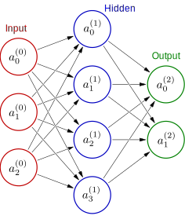

PyTorch#
PyTorch is a machine learning framework based on the Torch library, used for applications such as computer vision and natural language processing. PyTorch provides two high-level features:
Tensor computing with acceleration via graphics processing units (GPUs)
Deep neural networks built on a tape-based automatic differentiation system
import torch
Tensors#
The central data abstraction in PyTorch is given by the torch.tensor class. It represents the counterpart of the numpy.ndarray class in NumPy, and many of the respective class methods have similar syntax.
Tensor creation#
Ways to create PyTorch tensors include:
torch.tensor()torch.empty()torch.zeros()torch.ones()torch.rand()
a = torch.rand(3, 3, dtype=torch.float32)
print(a)
tensor([[0.1589, 0.3486, 0.1677],
[0.0783, 0.6321, 0.9046],
[0.0386, 0.7977, 0.0498]])
By default, PyTorch tensors are populated with 32-bit (single precision) floating point numbers suitable for arithmetic operations on GPUs, but many other data types are available and include:
torch.booltorch.int8torch.int16torch.int32torch.int64torch.halfortorch.float16torch.floattorch.doubleortorch.float64
A PyTorch tensor can be converted to a regular Python list.
a.tolist()
[[0.1589457392692566, 0.34863436222076416, 0.1677342653274536],
[0.0783417820930481, 0.6320607662200928, 0.9046047925949097],
[0.03856998682022095, 0.797675609588623, 0.04977989196777344]]
Conversely, a Python list can be converted to a PyTorch tensor.
torch.tensor(a.tolist())
tensor([[0.1589, 0.3486, 0.1677],
[0.0783, 0.6321, 0.9046],
[0.0386, 0.7977, 0.0498]])
Tensor operations#
PyTorch tensors have over three hundred operations that can be performed on them, including:
torch.abs()torch.max()torch.mean()torch.std()torch.prod()torch.unique()torch.matmul()torch.svd()torch.sin()torch.cos()torch.flatten()
a.mean()
tensor(0.3529)
Note that a tensor with a scalar number is given in return. To instead get a Python number in return, we can perform
a.mean().item()
0.35292747616767883
NumPy bridge#
import numpy as np
np_array = np.ones((2, 3))
pth_tensor = torch.from_numpy(np_array)
print(pth_tensor)
tensor([[1., 1., 1.],
[1., 1., 1.]], dtype=torch.float64)
We note that the NumPy array default data type of float64 (double precision) is preserved. In fact, we merely created a pointer to the same data in memory such that a change in one object is reflected in both.
np_array[1, 2] = 2
print("Modified numpy array:\n", np_array)
print("Bridged pytorch tensor:\n", pth_tensor)
Modified numpy array:
[[1. 1. 1.]
[1. 1. 2.]]
Bridged pytorch tensor:
tensor([[1., 1., 1.],
[1., 1., 2.]], dtype=torch.float64)
A reason to create a bridge between data can e.g. be to take advantage of the easy accessible GPU acceleration available in PyTorch for scientific codes developed with NumPy.
Neural networks#
The machine learning models in PyTorch are built as neural networks with layers of neurons. The input layers received input data; hidden layers transforms the data; and the output layer provides the results upon which model predictions are made.
Every neuron has an associated activation level. The input level apart, activation levels in a given level, say \(L\), are determined from those in the previous layer by use of weights that are collected in a matrix \(\boldsymbol{W}\) and biases that are collected in a row vector \(\boldsymbol{b}\).
A layer is referred to as linear if the weights and biases are applied in a linear transformation
As indicated, to get the final activation levels also involves the elementwise operation of a (typically) nonlinear activation function, \(f\).

Flatten tensors#
PyTorch receives input data in the form of batches of PyTorch tensors of rank 1. If data is stored as tensors of higher rank, they first need to be flattened.
Let us assume having three \(2\times 2\) tensors as input, e.g. three greyscale images of two-by-two pixels.
batch_size = 3
tensor_batch = torch.rand(batch_size, 2, 2)
flatten = torch.nn.Flatten()
a0 = flatten(tensor_batch)
These have now been flattened to become three row vectors of dimension four.
print(a0)
tensor([[0.5271, 0.5136, 0.7216, 0.6727],
[0.8824, 0.6647, 0.1921, 0.8966],
[0.5287, 0.6785, 0.5549, 0.8596]])
Layer transformations#
The linear layer transformation described above is achieved with the torch.nn.Linear class.
linear = torch.nn.Linear(4, 2, bias=True)
Here we consider a transformation from an input layer with four neurons, \(n_0 = 4\), to a hidden layer with only two, \(n_1 = 2\).
When instantiated, the hidden layer object receives weight and bias attributes that are initialized randomly with values
linear.weight
Parameter containing:
tensor([[-0.4319, 0.0722, 0.4675, 0.0452],
[ 0.1584, 0.3780, 0.0108, -0.3563]], requires_grad=True)
linear.bias
Parameter containing:
tensor([-0.2336, -0.3900], requires_grad=True)
Use PyToch to perform the layer transoformation.
linear(a0)
tensor([[-0.0563, -0.3443],
[-0.4363, -0.3164],
[-0.1146, -0.3501]], grad_fn=<AddmmBackward0>)
Check the transformation with an explicit calculation of the linear transformation:
torch.matmul(a0, linear.weight.T) + linear.bias
tensor([[-0.0563, -0.3443],
[-0.4363, -0.3164],
[-0.1146, -0.3501]], grad_fn=<AddBackward0>)
We note that the two results are identical.
Now remains the application of the nonlinear activation function, \(f\), according to
A common choice in machine learning is to adopt the rectifier linear unit function
relu = torch.nn.ReLU()
a1 = relu(linear(a0))
a1
tensor([[0., 0.],
[0., 0.],
[0., 0.]], grad_fn=<ReluBackward0>)
The effect of the ReLU function is as anticipated.
Loss function#
In the process of training the network, we need a measure of closeness between the prediction in the output layer and the correct result. This measure is given by a loss function. Several loss functions are available in PyTorch for different purposes. In binary classification networks, the CrossEntropyLoss() function is a typical choice.
loss_func = torch.nn.CrossEntropyLoss()
Let us assume that we have four classes in the output layer and that we are concerned with a specific item in the data set for which the correct answer is class number three.
correct_answer = torch.tensor([0.0, 0.0, 1.0, 0.0])
Let us further assume that we have made two separate predictions (one good and one bad) in the output layer leading to the following activity levels.
good_prediction = torch.tensor([0.2, 0.5, 3.1, -0.1])
bad_prediction = torch.tensor([2.0, 2.5, 1.1, -0.5])
The associated loss function values (errors) are given by:
print("good prediction loss =", loss_func(good_prediction, correct_answer))
print("bad prediction loss =", loss_func(bad_prediction, correct_answer))
good prediction loss = tensor(0.1571)
bad prediction loss = tensor(2.0434)
As expected, the error is deemed much larger for the bad prediction.
Let us see how PyTorch came this conclusion.
In a first step, the predictions are exponentialized, promoting large positive numbers.
good_p1 = torch.exp(good_prediction)
bad_p1 = torch.exp(bad_prediction)
print("step 1: good prediction loss =", good_p1)
print("step 1: bad prediction loss =", bad_p1)
step 1: good prediction loss = tensor([ 1.2214, 1.6487, 22.1979, 0.9048])
step 1: bad prediction loss = tensor([ 7.3891, 12.1825, 3.0042, 0.6065])
In a second step, a normalization is performed.
good_p2 = good_p1 / good_p1.sum()
bad_p2 = bad_p1 / bad_p1.sum()
print("step 2: good prediction loss =", good_p2)
print("step 2: bad prediction loss =", bad_p2)
step 2: good prediction loss = tensor([0.0470, 0.0635, 0.8547, 0.0348])
step 2: bad prediction loss = tensor([0.3187, 0.5255, 0.1296, 0.0262])
In a third step, we take the negative logarithm so that a values close to one become close to zero (low loss).
good_p3 = -torch.log(good_p2)
bad_p3 = -torch.log(bad_p2)
print("step 3: good prediction loss =", good_p3)
print("step 3: bad prediction loss =", bad_p3)
step 3: good prediction loss = tensor([3.0571, 2.7571, 0.1571, 3.3571])
step 3: bad prediction loss = tensor([1.1434, 0.6434, 2.0434, 3.6434])
In a forth step, we pick out the loss for the binary correct answer by means of a product.
good_p4 = good_p3 * correct_answer
bad_p4 = bad_p3 * correct_answer
print("step 4: good prediction loss =", good_p4)
print("step 4: bad prediction loss =", bad_p4)
step 4: good prediction loss = tensor([0.0000, 0.0000, 0.1571, 0.0000])
step 4: bad prediction loss = tensor([0.0000, 0.0000, 2.0434, 0.0000])
In a fifth step, a summation is performed to produce a scalar loss value.
print("good prediction loss =", good_p4.sum())
print("bad prediction loss =", bad_p4.sum())
good prediction loss = tensor(0.1571)
bad prediction loss = tensor(2.0434)
We note that the resulting losses are identical to those obtained with the PyTorch loss function.